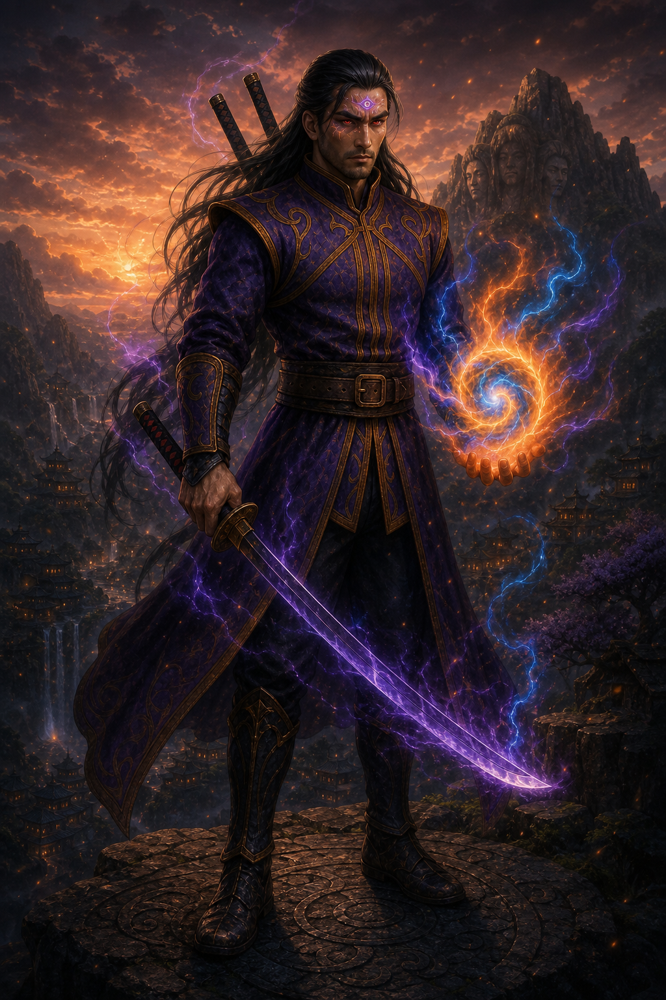

Nero
O herdeiro Uchiha-Hyuuga, determinado a dominar seu próprio destino.

Herdeiro de dois grandes clãs e transformado pelas células Senju, Nero alcançou um poder visual sem comparação — completado apenas pelo Shikungan de Hinara.
Nero nasceu no encontro de duas linhagens que moldaram a história do mundo shinobi.
Uchiha Hyuuga Nero herdou capacidades dos dois clãs mais poderosos de sua era. Desde jovem, carregou técnicas oculares e uma percepção do chakra que nenhum treinamento comum seria capaz de produzir.
Essa herança trouxe poder, mas também responsabilidade. Nero precisou construir uma identidade que não pertencesse apenas a um nome de família, aprendendo a equilibrar forças que raramente coexistiam no mesmo corpo.
Seu caminho encontrou propósito no lendário Time 10, onde deixou de lutar sozinho e passou a confiar seu destino a companheiros.
O herdeiro Uchiha-Hyuuga, determinado a dominar seu próprio destino.
Companheira de equipe e futura esposa de Nero, portadora do Shikungan.
O terceiro membro do Time 10, ligado à força vital da linhagem Senju.
O mestre que guiou o Time 10 e mudou para sempre o destino de Nero.
Durante uma missão, Hashimo transferiu suas células para salvar Nero da morte. A cura uniu definitivamente três heranças em seu corpo.
O poder visual mais poderoso do mundo shinobi, despertado por Nero após a fusão de suas heranças.
O olhar despertado por Hinara, criado para completar e equilibrar o Shinugan.
Casados, Nero e Hinara protegem um mundo cuja existência permanece desconhecida pelos demais shinobis.
Além das vilas e das guerras registradas, Nero e Hinara vigiam uma fronteira invisível. O Shinugan revela; o Shikungan completa. Juntos, protegem aquilo que o mundo shinobi sequer sabe que pode perder.